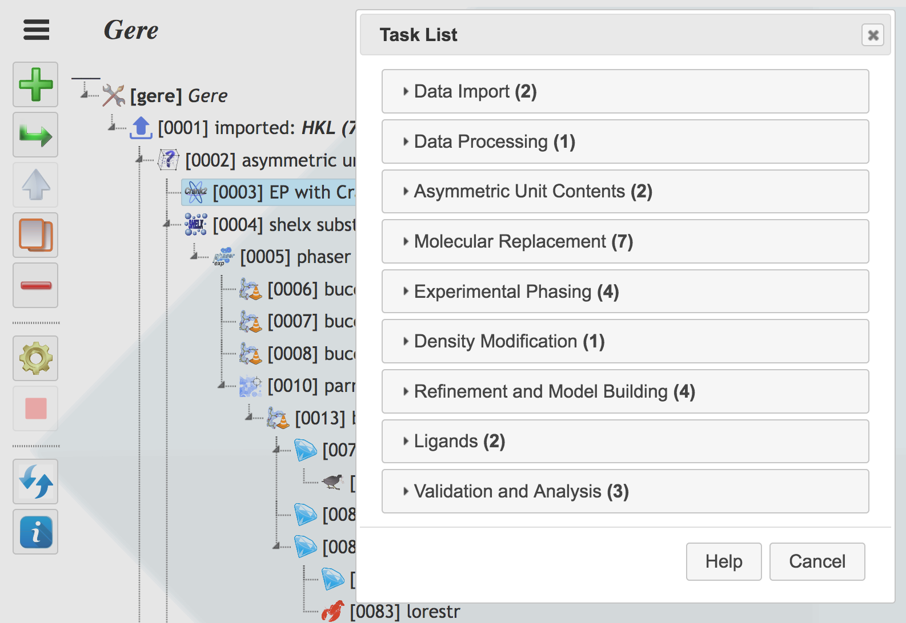

3. Task List¶
Task List contains all tasks runnable in CCP4 Cloud, and is used to select one of them for the insertion in the Job Tree, further configuration (choice of inpud data and parameters) and starting a job.
All tasks are groupped in several folders. In every folder, relevant tasks are listed as separate entries having a task button with icon on the left, and task title on the right.
Each folder’s name contains a number in brackets, showing how many tasks from that folder can be run at given point of CCP4 Cloud’s Project; this point corresponds to the selected job in the Job Tree right behind the Task List:
{kind=link}
If you open a folder of interest, you will see tasks, that cannot be run, presented with titles deemed and the corresponding task button framed in red. A task cannot be run if there is no sufficient data for it in the given point of the Project. You may see which data is missing by pressing the corresponding task button – a summary of required and available data for the task will be shown.
If task is runnable (with icons framed in either green (no data ambiguity) or amber (data may need to be selected before run), then pressing the task button will put it as a child of the highlighted node of the Job Tree and open its Job Dialog. In the dialog, you may need to select input data, modify job parameters and finally start the job by pressing “Run” button in Job Dialog’s toolbar.